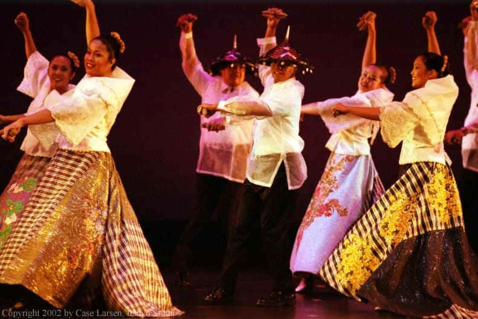

The cariñosa is a Philippine folk dance of Hispanic origin. It is closely associated with the island of Panay and the Visayas region in general. The word cariñosa is from the Spanish cariñosa meaning the affectionate one. Most Filipina women can be described as karinyosa. Tthe fan or handkerchief plays an instrumental role as it places the couple in romance scenario.